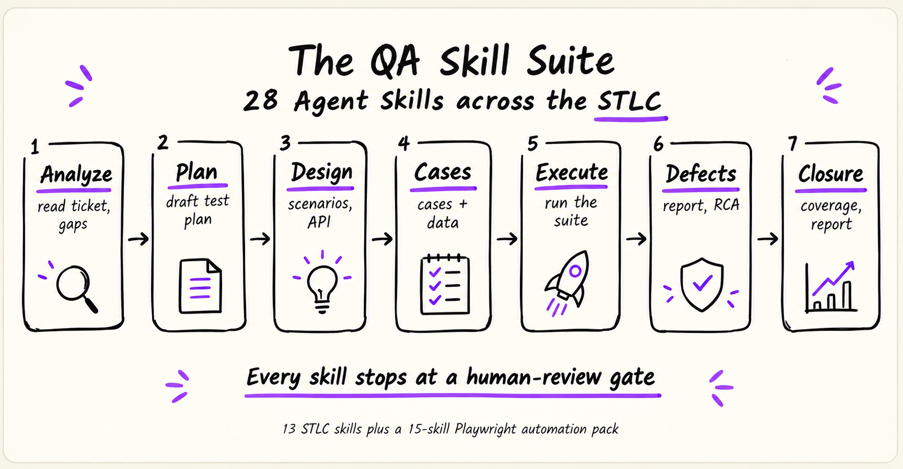

Ask an AI assistant for test cases today and you get a different answer every time — different sections, different wording, no link back to the requirement, and only the standards you remembered to paste. This is a library of 28 ready-made instruction files that teach your assistant how your team actually works: requirement analysis, test planning, test design, test cases, execution, defect management, root-cause analysis and test closure — plus a Playwright automation pack.
For QA engineers, SDETs, test leads and BAs — anyone who writes or reviews QA output.
Nothing changes about how you work — you still just ask your assistant for what you need. What changes is what comes back.
“Write test cases for the login page.”
The same sentence, either way. Two very different results below.Think of it as the onboarding note you'd hand a new tester — except the assistant re-reads it before every single run, so it never drifts, skips a step, or makes up its own format.
One file per job: one for test planning, one for writing bug reports, one for root-cause analysis. Every file has the same four parts.
A name and one line describing the task, so the assistant knows when this file applies.
The exact workflow, in order — the assistant works through it instead of improvising.
The sections every output has to have, so two people asking get the same shape back.
The limits: never invent an acceptance criterion, never close a ticket, never use real customer data.
--- name: pw-flaky-debugger description: >- Diagnoses a flaky Playwright test by collecting evidence, classifying the root cause (product / test / env / data), and proposing the smallest fix. license: MIT metadata: author: Shivani Singh pack: playwright version: 1.0.0 --- # never fixes flakiness with a longer wait — # it hunts the race, then hands you a diff
Every one of the 28 skills is a file like this — there is nothing else to learn. Point your assistant at one and a ticket becomes a first draft you edit, instead of a blank page you fill.
Test plans, test cases, test data, regression picks, bug reports, defect triage, root-cause analysis, coverage gaps, closure reports, Playwright tests — different content each time, the same reviewable shape every time. Below is one of them, shortened: the test case writer, run against a login story.
TC-07 Lock account after repeated failures [AC-3] Setup Existing user, 0 failed attempts Steps 1. Enter valid email + wrong password ×5 2. Try a 6th login with the CORRECT password Expect Login refused, lockout message shown Type Negative Priority High Automate Yes COVERAGE AGAINST THE STORY AC-1 covered — TC-01, TC-02 AC-2 covered — TC-03 … TC-06 AC-3 partial — the story never states how long an account stays locked HUMAN REVIEW GATE Facts · Observations · Assumptions · Unknowns AC-3 needs a lockout duration before TC-07 can be finalised — asked, not assumed.
STLC is the Software Testing Life Cycle — the phases every test effort moves through, from reading a requirement to signing off a release. Read the map left to right: one phase per column, with the skills available in each.

You don't have to start on the left. Every skill runs on its own — when an earlier phase's output happens to exist, the next one reuses it instead of starting over.You can try any skill in the next five minutes, in whichever AI assistant you already use — there's no plugin, no account, and no change to your project.
Clone the repo, or download all 28 skills (.zip, ~100KB) so the skill folders sit inside your project.
Claude Code, GitHub Copilot, or any assistant that can read the files in your project folder.
Pick a skill below and hit copy — the prompt already points at the right file. Then review what comes back.
/test-plan-generator instead of the file path. See Install when you're ready.13 for the testing lifecycle, 15 for the Playwright pack. Search by name, or by what you're trying to do.
Pick a skill from the list to see what it needs from you, what it hands back, and a prompt you can copy straight into your assistant.
Start with Requirement Readiness Analyzer if you want the smallest possible first try — paste in a user story and it tells you whether it's ready to test.
The copy-paste prompts above already work without any setup. Installing only buys you a shortcut — typing /test-plan-generator instead of naming a file path — by copying the skill folders into the place your assistant looks.
A skill folder always contains SKILL.md, the workflow itself, and may sit alongside references/ and scripts/ that it opens only when a step needs them. That structure is the same everywhere; where each tool looks for it is not.
SKILL.md — required workflow file.references/ — optional supporting knowledge.scripts/ — optional executable tools.Drop the folders in the project directory to share them with your team through Git, or in the personal directory to keep them across all your projects.
| Tool | Recognized project directory | Recognized personal directory |
|---|---|---|
| Claude Code | .claude/skills/ | ~/.claude/skills/ |
| GitHub Copilot CLI | .github/skills/, .claude/skills/, or .agents/skills/ | ~/.copilot/skills/ or ~/.agents/skills/ |
| Other tools | Check that tool's own docs | Check that tool's own docs |
.claude/skills/, so a folder set up for one may already work in the other./<name>, but exactly how slash commands behave varies by tool and version.Worth stating plainly — it's the first thing most QA people want to know.
Meet Playwright Flaky Analyzer — a companion CLI: deterministic cross-run classification, 21 root-cause rules, an interactive HTML dashboard, fully offline. pw-test-health-reporter above is written to use it when it's in your project.